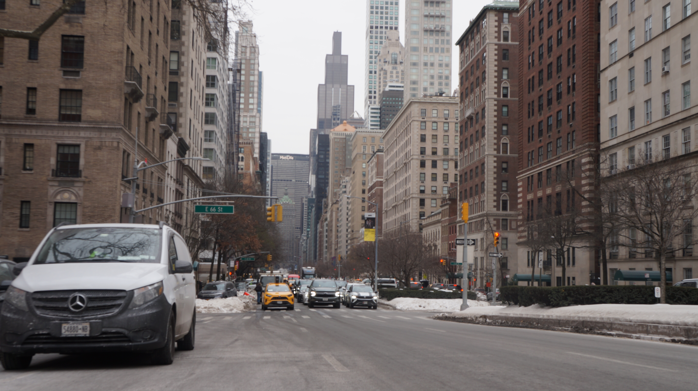

← Back to Home
Week 3: Depth of Field
Image 1: Shallow depth of field (in-camera)
Image 2: Deep depth of field (in-camera)

Image 3: Deep depth of field (before blur)
Image 3: After Field Blur (edited to look shallow)
 Image 1: Shallow depth of field (in-camera)
Image 1: Shallow depth of field (in-camera)
 Image 2: Deep depth of field (in-camera)
Image 2: Deep depth of field (in-camera)